测上证综指在2017年走势
男
公历起卦时间：2017年1月30日17时25分 (手工指定)
干支：丙申年 辛丑月 丁巳日 己酉时 （日空：子丑）
坎宫：坎为水 (六冲)
六神 伏神 本 卦 变 卦
青龙 兄弟戊子水 ▅▅ ▅▅ 世
玄武 官鬼戊戌土 ▅▅▅▅▅
白虎 父母戊申金 ▅▅ ▅▅
腾蛇 妻财戊午火 ▅▅ ▅▅ 应
勾陈 官鬼戊辰土 ▅▅▅▅▅
朱雀 子孙戊寅木 ▅▅ ▅▅
点评： 世爻旬空，静卦反而有财。
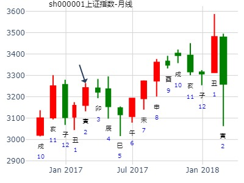
测600513联环药业在2020年2月份走势
公历起卦时间：2020年1月29日11时22分 (手工指定)
干支：己亥年 丁丑月 辛未日 甲午时 （日空：戌亥）
神煞：驿马－巳 桃花－子 日禄－酉 贵人－寅，午
坎宫：坎为水 (六冲)
六神 伏神 本 卦
腾蛇 兄弟戊子水 ▅▅ ▅▅ 世
勾陈 官鬼戊戌土 ▅▅▅▅▅
朱雀 父母戊申金 ▅▅ ▅▅
青龙 妻财戊午火 ▅▅ ▅▅ 应
玄武 官鬼戊辰土 ▅▅▅▅▅
白虎 子孙戊寅木 ▅▅ ▅▅
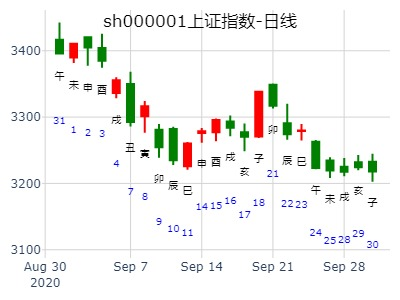
上证2月涨跌？ 坎为水静卦。
2022年1月26日22时7分 (电脑自动)
干支：辛丑年 辛丑月 己卯日 乙亥时 （日空：申酉）
神煞：驿马－巳 桃花－子 日禄－午 贵人－子，申
坎宫：坎为水 (六冲)
六神 伏神 本 卦
勾陈 兄弟戊子水 ▅▅ ▅▅ 世
朱雀 官鬼戊戌土 ▅▅▅▅▅
青龙 父母戊申金 ▅▅ ▅▅
玄武 妻财戊午火 ▅▅ ▅▅ 应
白虎 官鬼戊辰土 ▅▅▅▅▅
螣蛇 子孙戊寅木 ▅▅ ▅▅
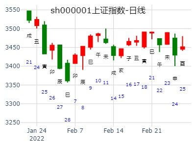
2012年3月大盘涨跌卦
占事：2012年3月大盘涨跌？
公历起卦时间：2012年2月29日16时32分 (手工指定)
干支：壬辰年 壬寅月 庚申日 甲申时 （日空：子丑）
神煞：驿马－寅 桃花－酉 日禄－申 贵人－丑，未
坎宫：坎为水 (六冲)
六神 伏神 本 卦
腾蛇 兄弟戊子水 ▅▅ ▅▅ 世
勾陈 官鬼戊戌土 ▅▅▅▅▅
朱雀 父母戊申金 ▅▅ ▅▅
青龙 妻财戊午火 ▅▅ ▅▅ 应
玄武 官鬼戊辰土 ▅▅▅▅▅
白虎 子孙戊寅木 ▅▅ ▅▅
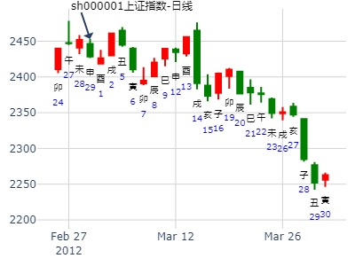
[注意]000721
起卦方式：手工指定 www.iqing.net 线上排盘系统
公历时间：2006年3月9日14时54分 星期四
农历时间：丙戌年二月初十未时
干支：丙戌年 辛卯月 丁酉日 丁未时 (旬空：辰巳)
神煞：驿马—亥 桃花—午 日禄—午 贵人—酉，亥
坎宫：坎为水（六冲）
六神 【本 卦】
青龙 ▅▅ ▅▅ 兄弟戊子水 世
玄武 ▅▅▅▅▅ 官鬼戊戌土
白虎 ▅▅ ▅▅ 父母戊申金
螣蛇 ▅▅ ▅▅ 妻财戊午火 应
勾陈 ▅▅▅▅▅ 官鬼戊辰土
朱雀 ▅▅ ▅▅ 子孙戊寅木
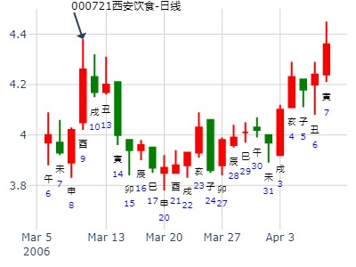
大盘 2017年3月2日6时46分
干 支：丁酉年 壬寅月 戊子日 乙卯时
时间: 2017-03-02
干支: 丁酉年壬寅月戊子日 (旬空: 午未 )
坎静卦
六神 伏神 本 卦
朱雀 ▅▅ ▅▅ 兄弟子水 世
青龙 ▅▅▅▅▅ 官鬼戌土
玄武 ▅▅ ▅▅ 父母申金
白虎 ▅▅ ▅▅ 妻财午火 应
腾蛇 ▅▅▅▅▅ 官鬼辰土
勾陈 ▅▅ ▅▅ 子孙寅木
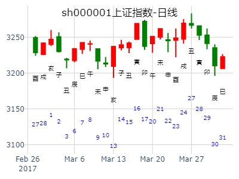
3.15日试测北方华创何月涨停？
排卦：元亨利贞网六爻在线排盘系统 https://www.china95.net
公历起卦时间：2021年3月19日7时52分 (电脑自动)
干支：辛丑年 辛卯月 丙寅日 壬辰时 （日空：戌亥）
神煞：驿马－申 桃花－卯 日禄－巳 贵人－酉，亥
坎宫：坎为水 (六冲) 坎宫：坎为水 (六冲)
六神 伏神 本 卦 变 卦
青龙 兄弟戊子水 ▅▅ ▅▅ 世 兄弟戊子水 ▅▅ ▅▅ 世
玄武 官鬼戊戌土 ▅▅▅▅▅ 官鬼戊戌土 ▅▅▅▅▅
白虎 父母戊申金 ▅▅ ▅▅ 父母戊申金 ▅▅ ▅▅
螣蛇 妻财戊午火 ▅▅ ▅▅ 应 妻财戊午火 ▅▅ ▅▅ 应
勾陈 官鬼戊辰土 ▅▅▅▅▅ 官鬼戊辰土 ▅▅▅▅▅
朱雀 子孙戊寅木 ▅▅ ▅▅ 子孙戊寅木 ▅▅ ▅▅
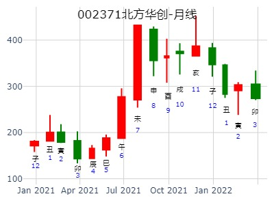
2014年5月大盘涨跌卦
占事：2014年5月大盘涨跌？
公历起卦时间：2014年4月30日15时56分 (手工指定)
干支：甲午年 戊辰月 辛未日 丙申时 （日空：戌亥）
神煞：驿马－巳 桃花－子 日禄－酉 贵人－寅，午
坎宫：坎为水 (六冲) 坎宫：坎为水 (六冲)
六神 伏神 本 卦 变 卦
腾蛇 兄弟戊子水 ▅▅ ▅▅ 世
勾陈 官鬼戊戌土 ▅▅▅▅▅
朱雀 父母戊申金 ▅▅ ▅▅
青龙 妻财戊午火 ▅▅ ▅▅ 应
玄武 官鬼戊辰土 ▅▅▅▅▅
白虎 子孙戊寅木 ▅▅ ▅▅
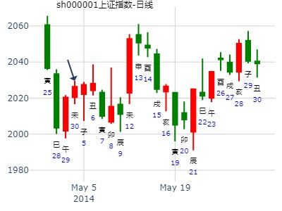
占事：601011宝泰隆明天涨跌
公历起卦时间：2016年5月30日17时27分 (电脑自动)
干支：丙申年 癸巳月 壬子日 己酉时 （日空：寅卯）
神煞：驿马－寅 桃花－酉 日禄－亥 贵人－卯，巳
坎宫：坎为水 (六冲) 坎宫：坎为水 (六冲) 六神 伏神
本 卦 变 卦
白虎 兄弟戊子水 ▅▅ ▅▅ 世
腾蛇 官鬼戊戌土 ▅▅▅▅▅
勾陈 父母戊申金 ▅▅ ▅▅
朱雀 妻财戊午火 ▅▅ ▅▅ 应
青龙 官鬼戊辰土 ▅▅▅▅▅
玄武 子孙戊寅木 ▅▅ ▅▅
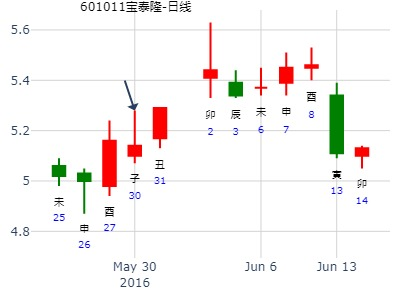
002361神剑股份明天涨跌
男 占事：002361神剑股份近期涨跌
公历起卦时间：2015年6月3日18时9分 (在线摇卦)
干支：乙未年 辛巳月 庚戌日 乙酉时 （日空：寅卯）
神煞：驿马－申 桃花－卯 日禄－申 贵人－丑，未
坎宫：坎为水 (六冲) 坎宫：坎为水 (六冲)
六神 伏神 本 卦 变 卦
腾蛇 兄弟戊子水 ▅▅ ▅▅ 世
勾陈 官鬼戊戌土 ▅▅▅▅▅
朱雀 父母戊申金 ▅▅ ▅▅
青龙 妻财戊午火 ▅▅ ▅▅ 应
玄武 官鬼戊辰土 ▅▅▅▅▅
白虎 子孙戊寅木 ▅▅ ▅▅
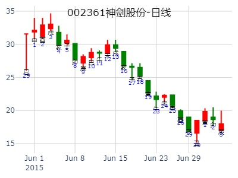
吾中吾开心 6月15-19日大盘
公历起卦时间：2015年6月17日10时42分 (手工指定)
干支：乙未年 壬午月 甲子日 己巳时 （日空：戌亥）
坎宫：坎为水 (六冲) 坎宫：坎为水 (六冲)
六神 伏神 本 卦 变 卦
玄武 兄弟戊子水 ▅▅ ▅▅ 世 兄弟戊子水 ▅▅ ▅▅ 世
白虎 官鬼戊戌土 ▅▅▅▅▅ 官鬼戊戌土 ▅▅▅▅▅
腾蛇 父母戊申金 ▅▅ ▅▅ 父母戊申金 ▅▅ ▅▅
勾陈 妻财戊午火 ▅▅ ▅▅ 应 妻财戊午火 ▅▅ ▅▅ 应
朱雀 官鬼戊辰土 ▅▅▅▅▅ 官鬼戊辰土 ▅▅▅▅▅
青龙 子孙戊寅木 ▅▅ ▅▅ 子孙戊寅木 ▅▅ ▅▅
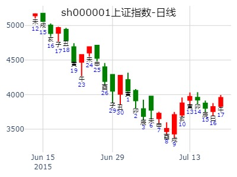
男 占事：002054同德化工明天涨跌
公历起卦时间：2016年6月1日21时23分 (电脑自动)
干支：丙申年 癸巳月 甲寅日 乙亥时 （日空：子丑）
神煞：驿马－申 桃花－卯 日禄－寅 贵人－丑，未
坎宫：坎为水 (六冲)
六神 伏神 本 卦
玄武 兄弟戊子水 ▅▅ ▅▅ 世
白虎 官鬼戊戌土 ▅▅▅▅▅
腾蛇 父母戊申金 ▅▅ ▅▅
勾陈 妻财戊午火 ▅▅ ▅▅ 应
朱雀 官鬼戊辰土 ▅▅▅▅▅
青龙 子孙戊寅木 ▅▅ ▅▅
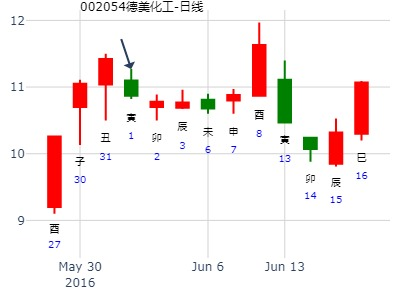
坎静卦_399006
占事: 创业板6月6日-10日行情
时间: 2022-06-03
干支: 壬寅年乙巳月丁亥日 (旬空: 午未 )
坎静卦
六神 伏神 本 卦
青龙 ▅▅ ▅▅ 兄弟子水 世
玄武 ▅▅▅▅▅ 官鬼戌土
白虎 ▅▅ ▅▅ 父母申金
腾蛇 ▅▅ ▅▅ 妻财午火 应
勾陈 ▅▅▅▅▅ 官鬼辰土
朱雀 ▅▅ ▅▅ 子孙寅木
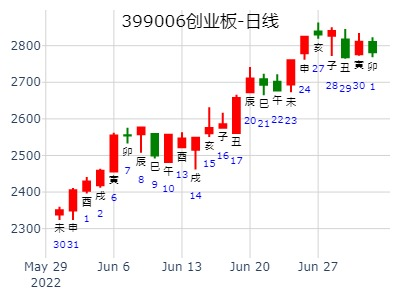
603228 景旺电子走势，现价24.83元
2022-06-06
干支：壬寅年 乙巳月 己丑日 辛未时 （日空：午未）
神煞：驿马－亥 桃花－午 日禄－午 贵人－子，申
坎宫：坎为水 (六冲)
六神 伏神 本 卦
勾陈 兄弟戊子水 ▅▅ ▅▅ 世
朱雀 官鬼戊戌土 ▅▅▅▅▅
青龙 父母戊申金 ▅▅ ▅▅
玄武 妻财戊午火 ▅▅ ▅▅ 应
白虎 官鬼戊辰土 ▅▅▅▅▅
螣蛇 子孙戊寅木 ▅▅ ▅▅
蒙：周涨
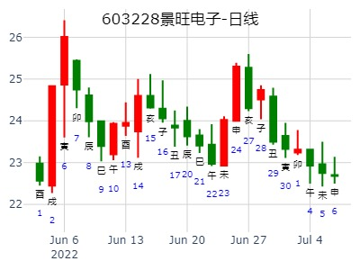
王测 占事：002029七匹狼本月走势？
公历起卦时间：2014年7月8日15时23分 (在线摇卦)
干支：甲午年 辛未月 庚辰日 甲申时 （日空：申酉）
坎宫：坎为水 (六冲)
六神 伏神 本 卦
腾蛇 兄弟戊子水 ▅▅ ▅▅ 世
勾陈 官鬼戊戌土 ▅▅▅▅▅
朱雀 父母戊申金 ▅▅ ▅▅
青龙 妻财戊午火 ▅▅ ▅▅ 应
玄武 官鬼戊辰土 ▅▅▅▅▅
白虎 子孙戊寅木 ▅▅ ▅▅
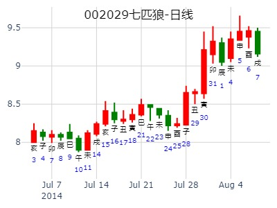
下周大盘能寻找的各卦
占事：8.1-5创业板走势？
公历起卦时间：2016年7月29日14时26分 (在线摇卦)
干支：丙申年 乙未月 壬子日 丁未时 （日空：寅卯）
神煞：驿马－寅 桃花－酉 日禄－亥 贵人－卯，巳
坎宫：坎为水 (六冲)
六神 伏神 本 卦
白虎 兄弟戊子水 ▅▅ ▅▅ 世
腾蛇 官鬼戊戌土 ▅▅▅▅▅
勾陈 父母戊申金 ▅▅ ▅▅
朱雀 妻财戊午火 ▅▅ ▅▅ 应
青龙 官鬼戊辰土 ▅▅▅▅▅
玄武 子孙戊寅木 ▅▅ ▅▅
继续下跌。出自碎白
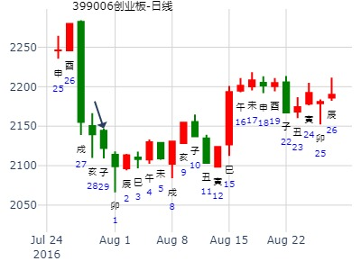
上证8.20庚子五 --（8.23癸卯一）-8.31辛亥二哪月底？
男
公历起卦时间：2021年8月25日8时39分 (电脑自动)
干支：辛丑年 丙申月 乙巳日 庚辰时 （日空：寅卯）
神煞：驿马－亥 桃花－午 日禄－卯 贵人－子，申
坎宫：坎为水 (六冲)
六神 伏神 本 卦
玄武 兄弟戊子水 ▅▅ ▅▅ 世
白虎 官鬼戊戌土 ▅▅▅▅▅
螣蛇 父母戊申金 ▅▅ ▅▅
勾陈 妻财戊午火 ▅▅ ▅▅ 应
朱雀 官鬼戊辰土 ▅▅▅▅▅
青龙 子孙戊寅木 ▅▅ ▅▅
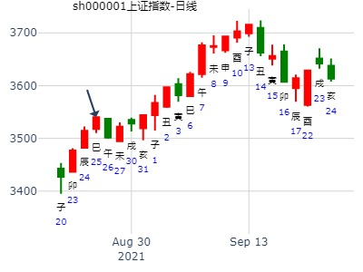
用易学测【9.21-9.25】沪市大盘走向和热点预测
[09-20] [09-20] 用易学测【9.21-9.25】沪市大盘中热点板块
公历起卦时间：2009年9月20日8时21分 (手工指定)
干支：己丑年 癸酉月 戊辰日 丙辰时 （日空：戌亥）
神煞：驿马－寅 桃花－酉 日禄－巳 贵人－丑，未
坎宫：坎为水 (六冲) 坎宫：坎为水 (六冲)
六神 伏神 本 卦 变 卦
朱雀 兄弟戊子水 ▅▅ ▅▅ 世 兄弟戊子水 ▅▅ ▅▅ 世
青龙 官鬼戊戌土 ▅▅▅▅▅ 官鬼戊戌土 ▅▅▅▅▅
玄武 父母戊申金 ▅▅ ▅▅ 父母戊申金 ▅▅ ▅▅
白虎 妻财戊午火 ▅▅ ▅▅ 应 妻财戊午火 ▅▅ ▅▅ 应
腾蛇 官鬼戊辰土 ▅▅▅▅▅ 官鬼戊辰土 ▅▅▅▅▅
勾陈 子孙戊寅木 ▅▅ ▅▅ 子孙戊寅木 ▅▅ ▅▅
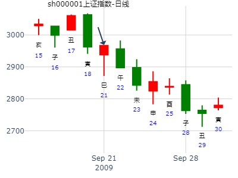
占事：000597短线走势？国庆前
起卦方式：手动摇卦
公历时间：2014年9月18日19时58分
干 支：甲午年 癸酉月 壬辰日 庚戌时 (午未)
坎宫：坎为水（六冲）
六神 【本 卦】
白虎 ▄▄ ▄▄ 兄弟戊子水 世
螣蛇 ▄▄▄▄▄ 官鬼戊戌土
勾陈 ▄▄ ▄▄ 父母戊申金
朱雀 ▄▄ ▄▄ 妻财戊午火 应
青龙 ▄▄▄▄▄ 官鬼戊辰土
玄武 ▄▄ ▄▄ 子孙戊寅木
目前入墓，到了下周戌日出墓就要大跌了。
午未日出空，就是辰巳空了，入墓却是入空墓，关不住兄弟。
坎卦卦名不好。
马后炮：
辰己出空后的第一个辰日，就收兄弟入墓大涨。（世爻兄
弟则旬空入墓都是大涨）
子日冲财爻日破，跌。（亥子日均是助世，故跌）
此处空墓与旅卦的化墓（空）不一样。这只是起卦日入日墓。
戌日可说是官鬼克兄弟，也可以说是冲空墓冲实。反而把兄弟关得牢牢的，涨。
30日辰日，持世的兄弟入墓，大涨。
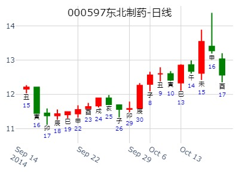
000593 大通燃气未来一周内的走势？
公历起卦时间：2021年9月24日23时5分 (电脑自动)
干支：辛丑年 丁酉月 丙子日 戊子时 （日空：申酉）
神煞：驿马－寅 桃花－酉 日禄－巳 贵人－酉，亥
坎宫：坎为水 (六冲)
六神 伏神 本 卦
青龙 兄弟戊子水 ▅▅ ▅▅ 世
玄武 官鬼戊戌土 ▅▅▅▅▅
白虎 父母戊申金 ▅▅ ▅▅
螣蛇 妻财戊午火 ▅▅ ▅▅ 应
勾陈 官鬼戊辰土 ▅▅▅▅▅
朱雀 子孙戊寅木 ▅▅ ▅▅
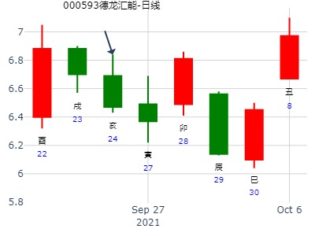
铜陵有色最近一个月走势涨跌横？坎为水静卦。
2021年10月22日21时31分 (在线摇卦)
干支：辛丑年 戊戌月 癸卯日 癸亥时 （日空：辰巳）
坎宫：坎为水 (六冲)
六神 伏神 本 卦
白虎 兄弟戊子水 ▅▅ ▅▅ 世
螣蛇 官鬼戊戌土 ▅▅▅▅▅
勾陈 父母戊申金 ▅▅ ▅▅
朱雀 妻财戊午火 ▅▅ ▅▅ 应
青龙 官鬼戊辰土 ▅▅▅▅▅
玄武 子孙戊寅木 ▅▅ ▅▅
元亨的摇卦版面，灵。
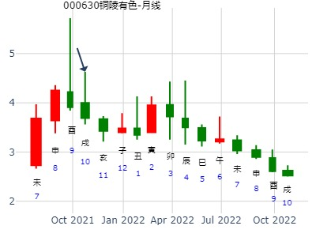
男 占事：000516开元投资本周涨跌
公历起卦时间：2013年11月4日18时55分 (电脑自动)
干支：癸巳年 壬戌月 甲戌日 癸酉时 （日空：申酉）
神煞：驿马－申 桃花－卯 日禄－寅 贵人－丑，未
坎宫：坎为水 (六冲)
六神 伏神 本 卦
玄武 兄弟戊子水 ▅▅ ▅▅ 世
白虎 官鬼戊戌土 ▅▅▅▅▅
腾蛇 父母戊申金 ▅▅ ▅▅
勾陈 妻财戊午火 ▅▅ ▅▅ 应
朱雀 官鬼戊辰土 ▅▅▅▅▅
青龙 子孙戊寅木 ▅▅ ▅▅
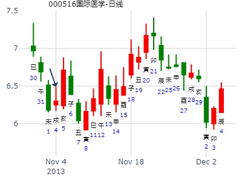
昨天低点追进601390，大赚，今天涨停的节奏！
601390下周走势
起卦方式：铜钱摇卦
起卦公历：2014年11月1日18时4分(北京时间)。
起卦农历：二○一四年 闰九月 初九日 酉时。
干支： 甲午年 甲戌月 丙子日 丁酉时 [空亡:申、酉]
主变卦 坎为水(坎宫)
青龙 ━ ━ 兄弟子水 世
玄武 ━━━ 官鬼戌土
白虎 ━ ━ 父母申金
腾蛇 ━ ━ 妻财午火 应
勾陈 ━━━ 官鬼辰土
朱雀 ━ ━ 子孙寅木
周一来个大涨,有可能封一下涨停.然后一直跌到周五,不要得意忘形,见好就收吧.
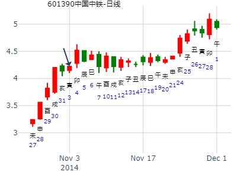
占事：神奇制药亥子丑走势 悟道
公历时间：2014年11月1日19时0分
干 支：甲午年 甲戌月 丙子日 戊戌时
旬 空：辰巳 申酉 (申酉) 辰巳
坎宫：坎为水（六冲）
六神 【本 卦】
青龙 ▄▄ ▄▄ 兄弟戊子水 世
玄武 ▄▄▄▄▄ 官鬼戊戌土
白虎 ▄▄ ▄▄ 父母戊申金
螣蛇 ▄▄ ▄▄ 妻财戊午火 应
勾陈 ▄▄▄▄▄ 官鬼戊辰土
朱雀 ▄▄ ▄▄ 子孙戊寅木
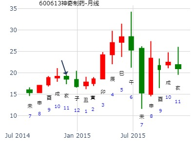
四同八字不同命案例。
静卦，坎为水，明天到23日，梅雁吉祥的走势，怎么看？
公历时间：2015年11月12日9时20分
干 支：乙未年 丁亥月 壬辰日 乙巳时
旬 空：辰巳 午未 (午未) 寅卯
神 煞：驿马─寅 桃花─酉 日禄─亥 贵人─巳，卯
坎宫：坎为水（六冲）
六神 【本 卦】
白虎 ▄▄ ▄▄ 兄弟戊子水 世
螣蛇 ▄▄▄▄▄ 官鬼戊戌土
勾陈 ▄▄ ▄▄ 父母戊申金
朱雀 ▄▄ ▄▄ 妻财戊午火 应
青龙 ▄▄▄▄▄ 官鬼戊辰土
玄武 ▄▄ ▄▄ 子孙戊寅木
梅雁吉祥起卦日 8。24 结束日7.84 周期下跌4.85%
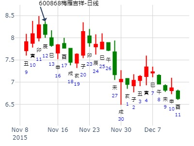
有靠谱的易友建的微信交流群吗？论坛看各类占卜眼花缭乱，群里水平高的一目了然。
我喜欢数据说话，其他没意义
四同八字不同命案例。
姓名： 出生年:1981 性别：男 占事：文峰股份847下周末
起卦方式：手动摇卦 易经股市论坛 www.yijingstock.com 在线排盘系统
公历时间：2015年11月12日10时18分
干 支：乙未年 丁亥月 壬辰日 乙巳时
旬 空：辰巳 午未 (午未) 寅卯
神 煞：驿马─寅 桃花─酉 日禄─亥 贵人─巳，卯
坎宫：坎为水（六冲）
六神 【本 卦】
白虎 ▄▄ ▄▄ 兄弟戊子水 世
螣蛇 ▄▄▄▄▄ 官鬼戊戌土
勾陈 ▄▄ ▄▄ 父母戊申金
朱雀 ▄▄ ▄▄ 妻财戊午火 应
青龙 ▄▄▄▄▄ 官鬼戊辰土
玄武 ▄▄ ▄▄ 子孙戊寅木
文峰股份起卦时价格为8.47 卦期结束时8.12 期间下跌4.13%
这个卦是我收集的案例之一，我手里十个类似的还是有的，没有数据分析是不好乱讲的
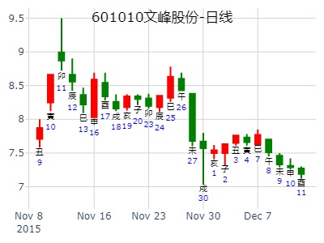
山河智能1620日走势
姓名：思无 占事：山河智能16-20日走势
起卦方式：手动摇卦
公历时间：2015年11月15日7时55分
干 支：乙未年 丁亥月 乙未日 庚辰时
旬 空：辰巳 午未 (辰巳) 申酉
坎宫：坎为水（六冲）
六神 【本 卦】
玄武 ▄▄ ▄▄ 兄弟戊子水 世
白虎 ▄▄▄▄▄ 官鬼戊戌土
螣蛇 ▄▄ ▄▄ 父母戊申金
勾陈 ▄▄ ▄▄ 妻财戊午火 应
朱雀 ▄▄▄▄▄ 官鬼戊辰土
青龙 ▄▄ ▄▄ 子孙戊寅木
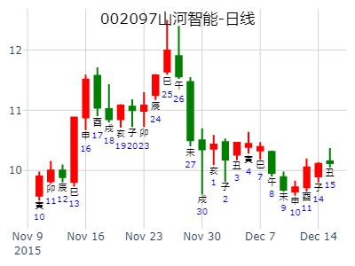
手摇 11月16日周卦：芯片etf
公历：2020年11月15日14时0分，星期日。
干支：庚子年 丁亥月 壬戌日 丁未时 (卦身：巳)
主变卦 坎为水(坎宫) [空亡:子、丑]
白虎 ▅▅ ▅▅ 兄弟戊子水 世
螣蛇 ▅▅▅▅▅ 官鬼戊戌土
勾陈 ▅▅ ▅▅ 父母戊申金
朱雀 ▅▅ ▅▅ 妻财戊午火 应
青龙 ▅▅▅▅▅ 官鬼戊辰土
玄武 ▅▅ ▅▅ 子孙戊寅木
点评：世爻旬空
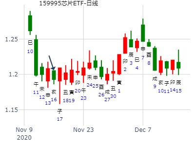
问股002647
代老师占一卦，到子月底涨跌
公历时间：2020年12月24日22时35分 农历时间：庚子年 十一月十日亥时
干 支：庚子年 戊子月 辛丑日 己亥时
旬 空：辰巳 午未 辰巳 辰巳
神 煞：驿马─亥 桃花─午 日禄─酉 贵人─寅，午
中国预测网纳甲六爻排盘
坎宫：坎为水（六冲）
六神 【本 卦】
螣蛇 ▄▄ ▄▄ 兄弟戊子水 世
勾陈 ▄▄▄▄▄ 官鬼戊戌土
朱雀 ▄▄ ▄▄ 父母戊申金
青龙 ▄▄ ▄▄ 妻财戊午火 应
玄武 ▄▄▄▄▄ 官鬼戊辰土
白虎 ▄▄ ▄▄ 子孙戊寅木
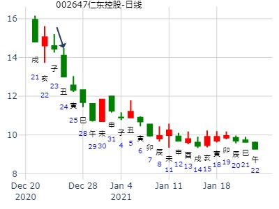
300491子月走势
公历时间：2021年12月7日21时46分
干 支：辛丑年 庚子月 己丑日 乙亥时
旬 空：辰巳 辰巳 午未 申酉
神 煞：驿马─亥 桃花─午 日禄─午 贵人─子，申
中国预测网纳甲六爻排盘
坎宫：坎为水（六冲）
六神 【本 卦】
勾陈 ▄▄ ▄▄ 兄弟戊子水 世
朱雀 ▄▄▄▄▄ 官鬼戊戌土
青龙 ▄▄ ▄▄ 父母戊申金
玄武 ▄▄ ▄▄ 妻财戊午火 应
白虎 ▄▄▄▄▄ 官鬼戊辰土
螣蛇 ▄▄ ▄▄ 子孙戊寅木
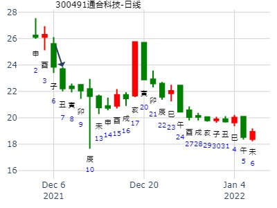